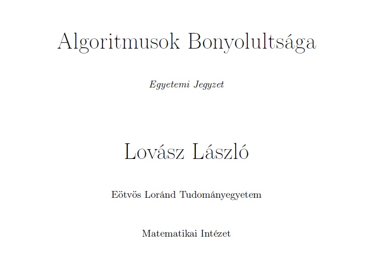

Algoritmusok

Ez a tantárgy algoritmusokat mutat be.
Tartalom
- Számítási modellek. A Turing gép fogalma, működése.
- A RAM-gép. Boole-függvények és logikai hálózatok.
- Algoritmikus eldönthetőség.
- Néhány algoritmikusan eldönthetetlen probléma.
- Nemdeterminisztikus algoritmusok
- Példák NP-beli nyelvekre.
- Nemdeterminisztikus algoritmusok bonyolultsága.
- NP-teljesség, Cook-tétel.
- Közelítő és randomizált algoritmusok.
- Információs bonyolultság.
- A bonyolultság alkalmazásai.